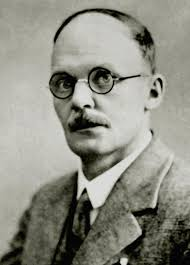
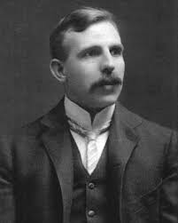
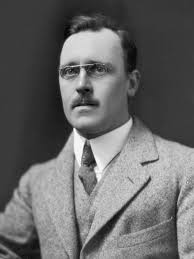
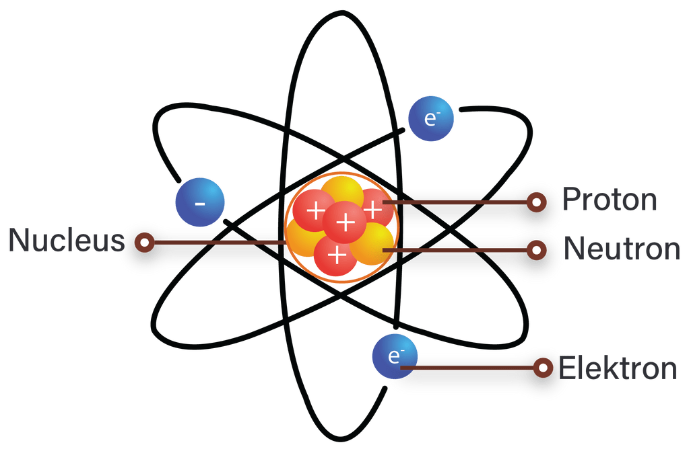

Teori Atom Rutherford
Teori atom Rutherford diperkenalkan oleh ilmuwan Ernest Rutherford
dengan bantuan Hans Geiger dan Ernest Marsden pada tahun 1911.

Hans Geiger

Ernest Rutherford

Ernest Mersden
Rutherford, ilmuwan yang lahir di Selandia Baru itu membentuk model atom
yang serupa dengan sistem tata surya layaknya planet yang mengitari
matahari.
Teori Atom Rutherford Menyatakan:
-
Atom adalah bentukan dari bola berongga yang mengandung inti atom
dengan muatan positif dan elektron bermuatan negatif yang mengitari
atom.
- Atom bersifat netral dan massanya berpusat di inti atom
Model Atom Rutherford

Kelebihan Teori Atom Rutherford:
-
Eksperimennya berhasil menemukan inti atom atau nukleus yang terdiri
dari proton dan neutron
-
Model Rutherford berhasil menggambarkan arah gerak elektron
bermuatan negatif di sekeliling inti atom
- Menemukan jari-jari pada atom dan inti atom
-
Rutherford menemukan inti atom yang sangat kecil dan elektron yang
ringan namun berkonsentrasi pada hamper keseluruhan massa atom
-
Lebih mudah dimengerti khususnya dalam penggambaran struktur atom
yang rumit.
Kelemahan Teori Atom Rutherford:
-
Kelemahan teori atom Rutherford adalah tidak adanya penjelasan
tentang spektrum garis atom hidrogen
-
Model ini tidak memberikan penjelasan stabilitas atom dan alasan
elektron tidak dapat jatuh ke inti atom
-
Elektron bermuatan negatif yang mengelilingi inti dapat membentuk
spiral dan jatuh ke inti namun faktanya elektron tetap stabil di
lintasan.
Back